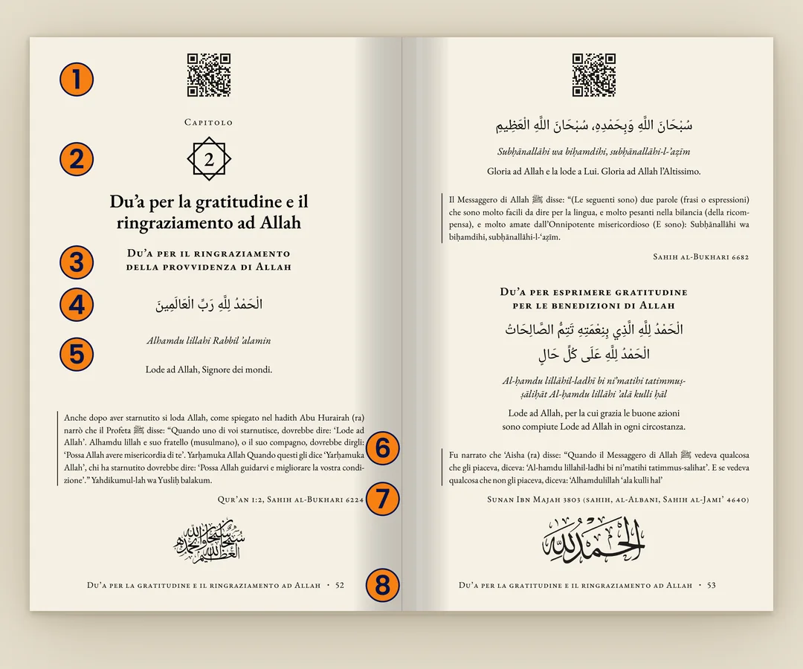

Il du’a del giorno
Tre du’a, completi
Così sono tutti i du’a del libro: arabo, traslitterazione, traduzione, fonte e audio.
Dal libro · pag. 19
L'audio non si è caricato. Riprova, o controlla la connessione.
اللَّهُمَّ بِاسْمِكَ أَمُوتُ وَأَحْيَا
Allāhumma bismika amūtu wa aḥyā
O Allah, nel Tuo Nome muoio e vivo.
Sahih al-Bukhari 6325
Dal libro · pag. 82
L'audio non si è caricato. Riprova, o controlla la connessione.
اللَّهُمَّ آتِ نَفْسِي تَقْوَاهَا وَزَكِّهَا أَنْتَ خَيْرُ مَنْ زَكَّاهَا أَنْتَ وَلِيُّهَا وَمَوْلاَهَا
Allāhumma ati nafsi taqwaha wa zakkiha, anta khayru man zakkaha, anta waliyyuha wa maulaha
O Allah, conferisci alla mia anima il timore (di Dio) e purificala. Tu sei il Migliore a purificarla. Tu sei il suo protettore e il suo padrone.
Sahih Muslim 2722
Dal libro · pag. 30
L'audio non si è caricato. Riprova, o controlla la connessione.
سُبْحَانَ الَّذِي سَخَّرَ لَنَا هَذَا وَمَا كُنَّا لَهُ مُقْرِنِينَ وَإِنَّا إِلَى رَبِّنَا لَمُنْقَلِبُونَ اللَّهُمَّ إِنَّا نَسْأَلُكَ فِي سَفَرِنَا هَذَا الْبِرَّ وَالتَّقْوَى وَمِنَ الْعَمَلِ مَا تَرْضَى اللَّهُمَّ هَوِّنْ عَلَيْنَا سَفَرَنَا هَذَا وَاطْوِ عَنَّا بُعْدَهُ اللَّهُمَّ أَنْتَ الصَّاحِبُ فِي السَّفَرِ وَالْخَلِيفَةُ فِي الأَهْلِ اللَّهُمَّ إِنِّي أَعُوذُ بِكَ مِنْ وَعْثَاءِ السَّفَرِ، وَكَآبَةِ الْمَنْظَرِ وَسُوءِ الْمُنْقَلَبِ فِي الْمَالِ وَالأَهْلِ آيِبُونَ تَائِبُونَ عَابِدُونَ لِرَبِّنَا حَامِدُونَ
Subḥānalladhī sakhkhara lanā hādhā wa mā kunnā lahū muqrinīna, wa innā ilā Rabbinā lamunqalibūn. Allāhumma innā nas’aluka fī safarinā hādhā al-birra wa at-taqwā wa min al-’amali mā tarḍā. Allāhumma hawwin ’alaynā safaranā hādhā waṭwi ’annā bu’dahu. Allāhumma anta aṣ-ṣāḥibu fī as-safar wa al-khalīfatu fī al-ahli. Allāhumma innī a’ūdhu bika min wa’thā’i as-safar wa ka’ābati al-manẓar wa sū’i al-munqalabi fī al-māl wa al-ahl. Āyibūna tā’ibūna ’ābidūna li Rabbinā ḥāmidūn
Gloria sia a Colui che ci ha messo questo (trasporto) al nostro servizio e noi stessi non saremmo stati capaci di questo. E al nostro Signore faremo ritorno. O Allah, chiediamo in questo nostro viaggio virtù e timor di Te, e tra le azioni quelle che ti soddisfano. O Allah, facilitaci questo nostro viaggio e rendi per noi breve la sua distanza. O Allah, Tu sei il (nostro) Compagno durante il viaggio e Guardiano della (nostra) famiglia. O Allah, cerco rifugio in Te dalle difficoltà del viaggio, dalla tristezza di ciò che si vede e dal trovare cambiamenti negativi in proprietà e famiglia al nostro ritorno. Stiamo tornando, pentiti, adorando il nostro Signore e lodandolo.
Sahih Muslim 1342
Come funziona il QR
- Apri il libro a una pagina con un du’a.
- Inquadra il QR con la fotocamera del telefono.
- Si apre la pagina con l’audio: ascolti e ripeti, senza scaricare nulla.

- Audio con QR (qui dimostrativo)
- Numero e titolo del capitolo
- Titolo del du’a
- Contesto della fonte
- Fonte
- Titolo e numero di pagina
- Testo arabo con vocali
- Traslitterazione
- Traduzione italiana
- Un secondo du’a nella pagina
Cosa non trovi qui
- Il contesto di ogni du’a, che nel libro accompagna il testo.
- Le funzioni per chi ha il libro: contatore degli ascolti e progresso personale, che si attivano inquadrando un QR del libro.
- Tutti gli altri du’a: qui ne ascolti tre, il libro ne raccoglie molti di più.